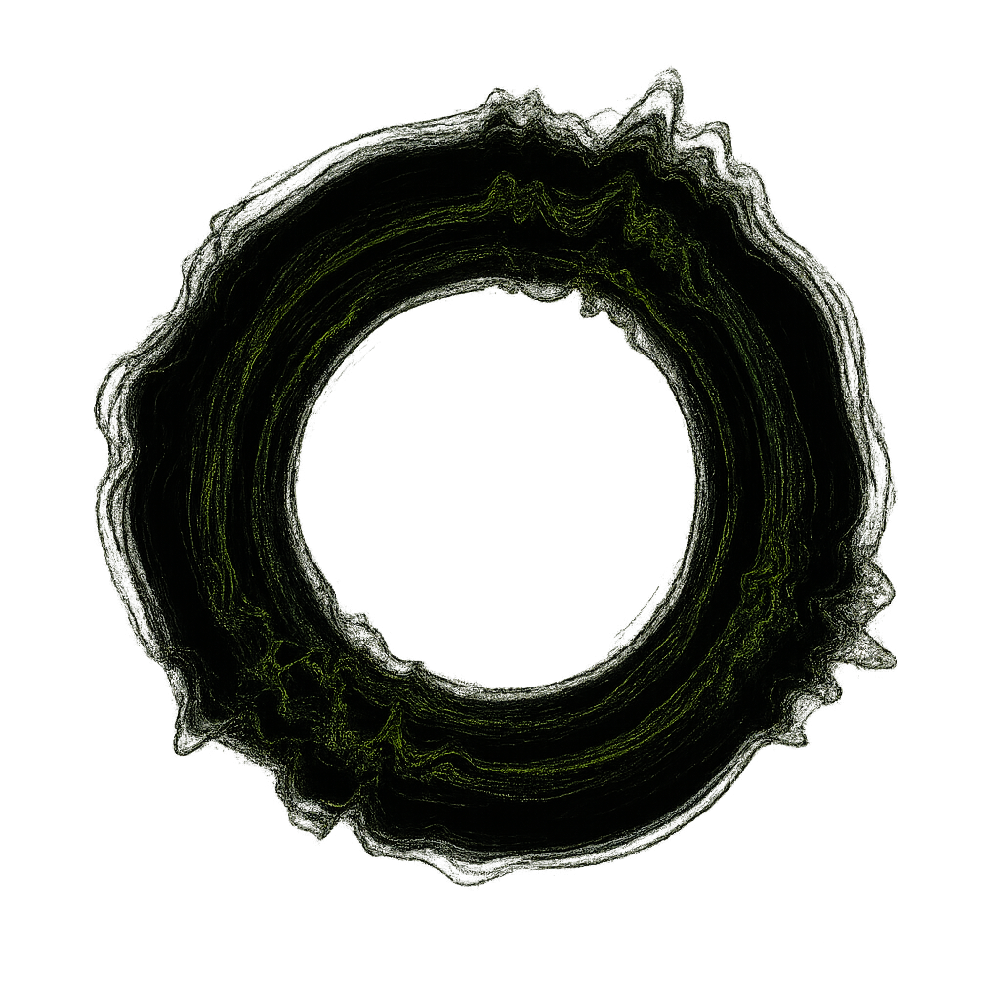
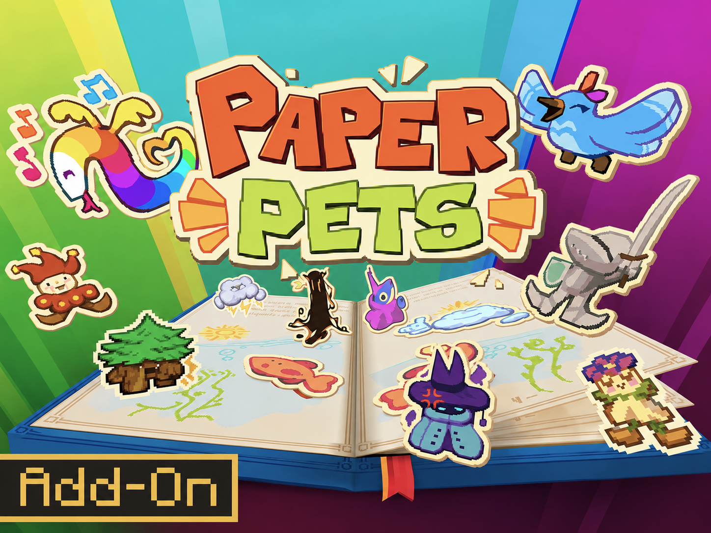
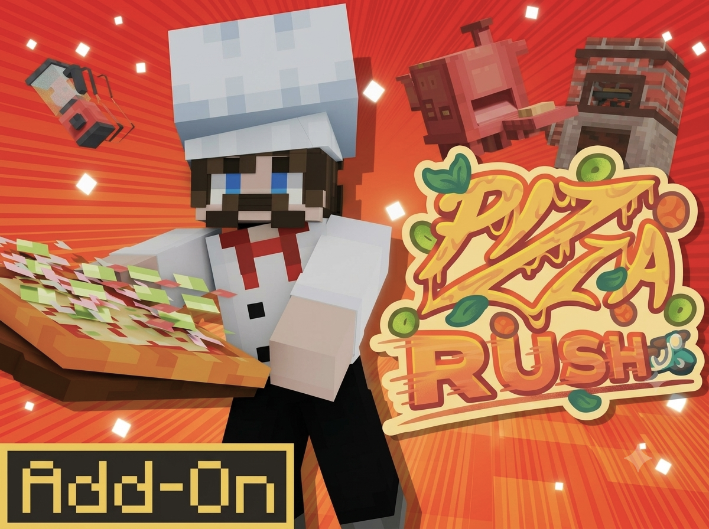

My practice lies at the intersection of technical craft and sound design. From developing leitmotifs for videogame characters to recording dialogue, foley and ambience on film sets, as well as creating sound design and original scores for short films and trailers, I approach sound as a narrative tool that shapes the way audiovisual works are experienced.
00:00 Production Sound · 00:43 Post-production and Mixing
This reel brings together work across different areas of sound production. The production sound section includes independent short films, an action feature film and horror productions. The post-production section features suspense, videogame sound design and character leitmotifs. Working across these genres has strengthened my ability to identify what each story requires sonically, whether creating intimacy, tension, spectacle or playful worlds.
Working and in sound since 2019.
Arcadia
For this short film, I wrote the screenplay and directed all sound and music post-production. The story follows three generations of women living in an old house, where a supernatural force sustains a family lineage defined by control. The sound design focused on building an unsettling atmosphere that gradually revealed this underlying tension.
Sound shaped the narrative from the earliest stages of writing. Each scene was conceived according to its sonic function before the visual language was established, while the matriarch's suspense leitmotif created a clear hierarchy between the characters. Extensive ADR and foley compensated for recordings made in a particularly noisy location. The score, built around electric guitar processed with reverb and low-frequency textures, created an unsettling atmosphere through minimal and experimental sound design.
The film was screened at ENERC Se Proyecta and received the Best Fiction Award at Re-Animaciones Fest (Guadalajara).
Grupo X Films
Sound production for a series of short films, including projects created for 48-Hour Film Challenges. My work covered the complete production chain, from location recording with boom and lavalier microphones to dialogue editing, ambience design and foley during post-production.
Grupo X Films · Excerpts from two short filmsS.S.T.S. / Enchanted · Minecraft Marketplace
Sound design for three Minecraft Marketplace add-ons, including original foley, environmental soundscapes, character leitmotifs for playable characters with distinct physical properties, including weight, size and material, as well as trailer sound design. All projects are publicly available through the official Minecraft Marketplace.
Sound design for gameplay and the official trailer. The main challenge was creating the voices of ten baby dinosaurs, creatures with no real-world sound reference. I developed original material by combining foley, commercial sound libraries and synthesis, giving each dinosaur a distinctive sonic identity and leitmotif based on its behaviour, drawing inspiration from birds and small animals. The trailer introduces the characters while establishing a playful atmosphere through sound and music.

Character sound design and leitmotif composition for more than fifteen playable characters. The main challenge was developing a coherent sonic identity for figures made entirely of paper, ensuring that every movement and emotional state reinforced the sensation that the characters were genuinely constructed from that material.
View on Marketplace ↗
Gameplay sound effects and trailer sound design. Recording and creation of original foley for kitchen utensils, household appliances, vegetables, cooking equipment and other interactive objects.
View on Marketplace ↗El Tinte · Studio Recording Practice
An intensive professional studio recording programme covering microphone techniques, stereo and multi-microphone configurations, phase relationships, analogue and digital signal flow, and Pro Tools session management. Practical work included recording full bands and instrumental ensembles in professional studio environments.